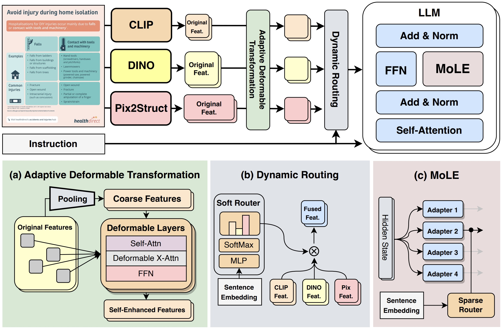
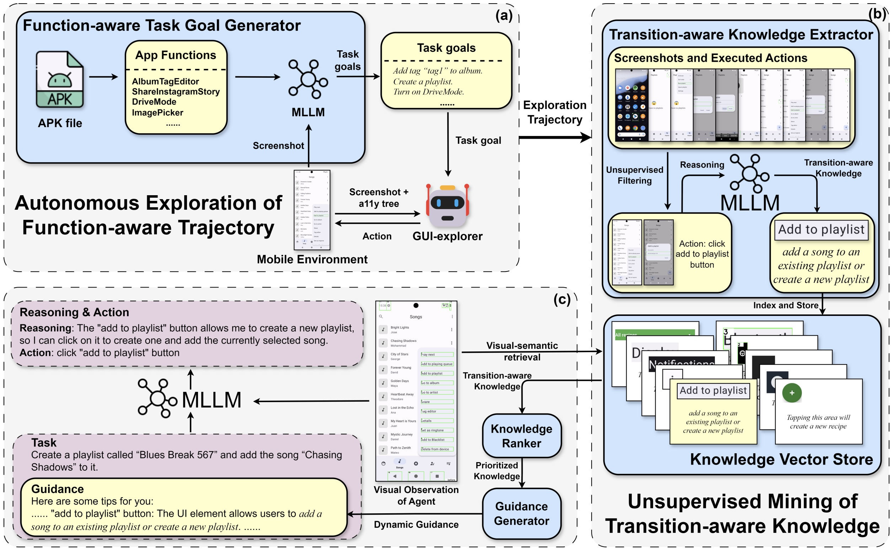

Our research primarily focuses on Multimodal Large Language Model (MLLM) and Embodied AI, with an emphasis on perception, reasoning, and decision-making in interactive environments:


Task instruction: Search today's weather in Shenzhen on Chrome, then write the temperature into today.md using Markor.
Task instruction: Open the drawer, put the toy inside, and then close it. [bilibili]
Task instruction: Fold the T-shirt carefully and finish with precise placement. [bilibili]
Task instruction: Put the bread into a bowl and heat it in the microwave. [bilibili]
Task instruction: Place both the lemon from the bowl and the apple on the table onto the plate, then put the lid on the bowl. [bilibili]
Task instruction: Grasp a plate and place it on the tablecloth. Both the plates and the tablecloths come in multiple styles. [bilibili]
Task instruction: Grasp three different fruits and place them onto the plate. For each rollout, a different combination of fruits is randomly sampled. [bilibili]
To further enhance our embodied AI research, our lab has recently acquired the R1 Lite robot from GaLaXea AI.
Software provided here is for personal research purposes only. Redistribution and commercial usage are not permitted. Feedback, applications, and further development are welcome. Contact shaorui[AT]hit.edu.cn for bugs and collaborations. All rights of the implementation are reserved by the authors.